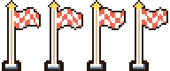

Monster & Rintangan
Injak bagian atas kepala Slime / Jamur / Bot untuk mengalahkannya. Hindari sentuhan samping, monster terbang (Kelelawar / Bola Energi / Glitch), proyektil, duri, serta jurang!
Game ini melatih cara berpikir komputasional melalui praktik langsung di tiga stage berbeda.
Gunakan A (Kiri), D (Kanan), dan W / Space (Melompat). Tingkat kesulitan menentukan HP (Easy: 7 HP, Normal: 5 HP, Hard: 3 HP). Setelah terkena bahaya fisik, karakter berkedip kebal selama 1,5 detik (jawaban salah soal tetap mengurangi 1 HP). Aktifkan Checkpoint (CP) untuk memulihkan HP penuh serta menyimpan progres gerbang saat Game Over!
Injak bagian atas kepala Slime / Jamur / Bot untuk mengalahkannya. Hindari sentuhan samping, monster terbang (Kelelawar / Bola Energi / Glitch), proyektil, duri, serta jurang!
Mendekati gerbang soal menjeda dunia dan membuka tantangan materi (Sequential 20 aktivitas, Bubble Sort 8 variasi objek, atau Terminal Virtual DOS). Jawab benar untuk membuka gerbang!

Kumpulkan koin emas opsional untuk menambah skor akhir stage. Stage selesai hanya jika ketiga gerbang soal terbuka dan kamu menyentuh bendera Finish!